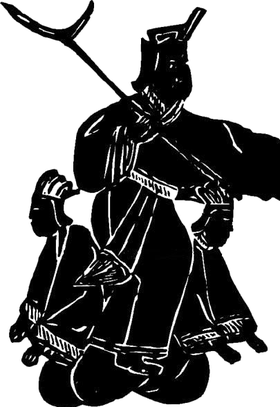

Xia
c. 2070–1600 BCE
Founder
Yu the Great
Controls the floods in the traditional account.
The notes connect Yu with the beginning of hereditary rule. In the succession tradition, his son Qi follows him.
Shangshu: Tribute of Yu English · James Legge
Shiji 2: Xia Chinese original
Read in English
Sima Qian, Shiji 2, Annals of Xia · Yu’s descent, and the last ruler
Yu of Xia was named Wenming. Yu’s father was Gun; Gun’s father was Emperor Zhuanxu; Zhuanxu’s father was Changyi; and Changyi’s father was the Yellow Emperor. Yu was thus a great-great-grandson of the Yellow Emperor and a grandson of Emperor Zhuanxu.
In the time of Emperor Jie, from Kong Jia on, many of the lords had turned away from Xia. Jie did not devote himself to virtue but used force to harm the people, and the people could not endure it. He then summoned Tang and imprisoned him at Xiatai, but soon released him. Tang cultivated virtue and the lords all turned to him, and Tang then led troops to attack Jie of Xia. Jie fled to Mingtiao, was banished, and died. Jie said to someone, “I regret that I did not kill Tang at Xiatai, and so brought myself to this.” Tang then took the seat of the Son of Heaven, replacing Xia and holding court over the world.
This passage, and the rest of Sima Qian’s Xia annals, does not mention Mo Xi or a wine pool. That story appears later.
夏禹，名曰文命。禹之父曰鯀，鯀之父曰帝顓頊，顓頊之父曰昌意，昌意之父曰黃帝。禹者，黃帝之玄孫而帝顓頊之孫也。
帝桀之時，自孔甲以來而諸侯多畔夏，桀不務德而武傷百姓，百姓弗堪。迺召湯而囚之夏臺，已而釋之。湯修德，諸侯皆歸湯，湯遂率兵以伐夏桀。桀走鳴條，遂放而死。桀謂人曰：「吾悔不遂殺湯於夏臺，使至此。」湯乃踐天子位，代夏朝天下。
Translation by Claude (an AI), made for this page from the Chinese Wikisource text. It is an excerpt, not a published translation. Check it against the Chinese before citing.
17 kingsTraditional count
Final ruler

King Jie 桀
Defeated by Tang in the traditional account.
Mo Xi 妺喜
The Lienüzhuan pairs Jie and Mo Xi with a wine lake and debauchery.
Read Lienüzhuan 7 · first biography Chinese original
Read in English
Liu Xiang, Lienüzhuan 7, “Mo Xi, consort of Jie of Xia” · excerpt
Mo Xi was the consort of Jie of Xia. She was beautiful to look at but thin in virtue; disorderly, wicked and lawless, a woman with a man’s heart, who wore a sword and a cap. Jie, having cast aside ritual and righteousness, was lewd with women. He sought out beautiful women and stored them in the rear palace, and gathered singers, entertainers, dwarfs and favorites who could put on strange and marvelous shows, and kept them at his side, making licentious music. Day and night he drank with Mo Xi and the palace women, without ever resting. He set Mo Xi on his knee and listened to and followed her words. Confused and off the Way, he was arrogant, extravagant and self-indulgent.
He made a pool of wine large enough to row a boat on. At one beat of the drum, three thousand men drank from it like oxen, lowering their heads to the pool of wine; those who grew drunk and drowned made Mo Xi laugh, and she took it as amusement. Long Pang came forward to remonstrate: “My lord, you are without the Way, and you will surely perish.” Jie said, “Does the sun perish? When the sun perishes, I shall perish.” He would not listen; he took it for ill-omened talk and killed him.
Written in the Han period, long after the traditional date of these events, in a book of moral examples about women. Compare the note on the Shiji above.
末喜者，夏桀之妃也。美於色，薄於德，亂孼無道，女子行丈夫心，佩劍帶冠。桀既棄禮義，淫於婦人，求美女，積之於後宮，收倡優侏儒狎徒能為奇偉戲者，聚之於旁，造爛漫之樂，日夜與末喜及宮女飲酒，無有休時。置末喜於膝上，聽用其言，昏亂失道，驕奢自恣。
為酒池可以運舟，一鼓而牛飲者三千人，䩭其頭而飲之於酒池，醉而溺死者，末喜笑之，以為樂。龍逢進諫曰：「君無道，必亡矣。」桀曰：「日有亡乎？日亡而我亡。」不聽，以為妖言而殺之。
Translation by Claude (an AI), made for this page from the Chinese Wikisource text. It is an excerpt, not a published translation. Check it against the Chinese before citing.
Battle of Mingtiao
Tang defeats Jie; Shang succeeds Xia.
Shiji 3: Yin (Shang) Chinese original
Read in English
Sima Qian, Shiji 3, Annals of Yin · Tang’s victory over Xia
Jie was defeated at the ruins of You Song. Jie fled to Mingtiao, and the Xia army was routed. (…) Then the lords all submitted, and Tang took the seat of the Son of Heaven and pacified all within the seas.
桀敗於有娀之虛，桀犇於鳴條，夏師敗績。……於是諸侯畢服，湯乃踐天子位，平定海內。
Translation by Claude (an AI), made for this page from the Chinese Wikisource text. It is an excerpt, not a published translation. Check it against the Chinese before citing.
Battle of Mingtiao English · Wikipedia